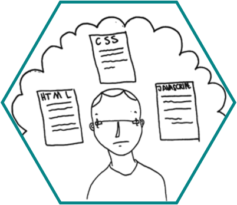

PowerReviews
PowerReviews is one of the top providers of reviews, ratings, and question-and-answer sections on e-commerce websites.
Many of their customers were asking for an easy way to customize the out-of-the-box HTML / CSS / JS solution that they provide. The current approach was to email the customer a highly technical 41-page PDF detailing the API.
PowerReviews wanted to make their API easily accessible to customers, for creating customizable product review sections.
Clickable pdf. Wireframes. Slide Deck.
We created an online explorer and editor for the PowerReviews API that allows users to understand the API elements available, and to customize the way display.
Our design is heavily influenced by jsfiddle. As a service, it has wide usage across skill levels and developer communities. We needed a way of displaying all of the file types at once, and preferably a visual display of the results. jsfiddle does this quite nicely, managing to pack a lot of information into a compact screen.
The universal response we got to prototypes at all fidelities was "wow! This is really great!" and "I would use the crap out of an API that had an interface like this."
I collaborated with one other classmate, Andrew Lux, on every aspect of this project. We worked together on research, sketches, persona generation, a paper prototype that was far more complicated than necessary, and user testing. He focused on creating high-fidelity wireframes and a prototype.
I synthesized the user feedback, analyzed the Information Architecture and created the site map, polished the personas, and led communications with our client.
Omnigraffle, Invision, Keynote, Google Drive.
{kind=link}
{kind=link}
{kind=link}
{kind=link}
Research and interviews allowed us to create two main personas - potential users and current users - that we wanted to target. Current users were the most important, per the brief and client conversations. However, we had come up with some ideas that could be used as marketing demos to show how easy it is to use the PowerReviews API.
The next step was to create the Information Architecture for our solution. Armed with what I had learned about the structure of API calls and the user feedback on our sketches, I went to the whiteboard to work out a basic flow and site map.
Subsequent user testing of paper prototypes validated many of our decisions. Most of the iteration that we did was on the details of the layout of the screen, and was based on the overwhelmingly positive reaction from our test users.